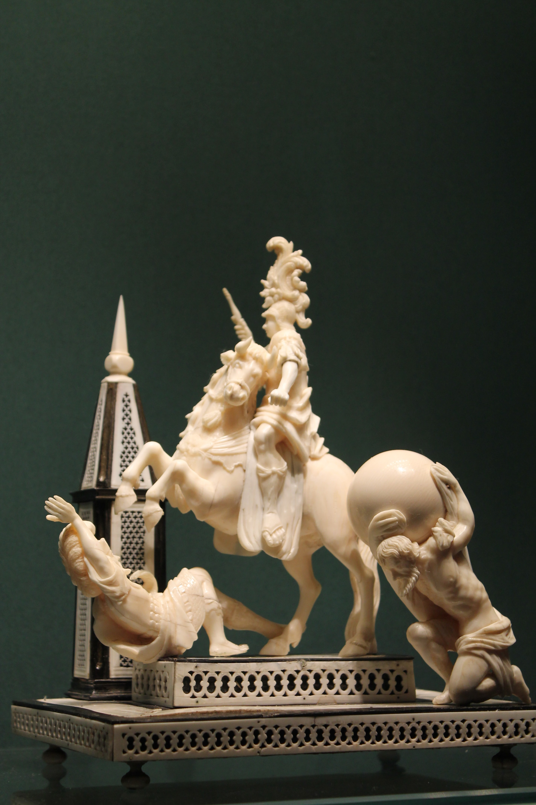

About me:
Like Marfil (Ivory in Spanish), I could be anything. From a junior developer to a baker, from piano keys to chess sets.
After working at the intersection between Art and technology,
I have chosen to leave the Arts and fully embrace my ever existing relationship with tech.
My mother is very happy.